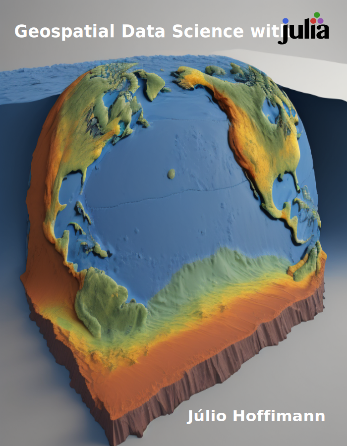

Geospatial Data Science with Julia
Welcome

Geospatial Data Science with Julia presents a fresh approach to data science with geospatial data and the  programming language. It contains best practices for writing clean, readable and performant code in geoscientific applications involving sophisticated representations of the (sub)surface of the Earth such as unstructured meshes made of 2D and 3D geometries.
programming language. It contains best practices for writing clean, readable and performant code in geoscientific applications involving sophisticated representations of the (sub)surface of the Earth such as unstructured meshes made of 2D and 3D geometries.
By reading this book, you will:
- Get a broader perspective on geospatial data
- Learn advanced geostatistical algorithms
- Reproduce practical open source examples
Most importantly, you will learn a set of geospatial features that is much richer than the simple features implemented in traditional geographic information systems (GIS).

This work is licensed under a Creative Commons Attribution-NonCommercial-NoDerivatives 4.0 International License.
How to contribute?
First off, thank you for considering contributing to this book. It’s people like you that make this project so much fun. Below are a few suggestions to facilitate the review process:
- Please be polite, we are here to help and learn from each other
- Try to explain your contribution with simple language
- References to textbooks and papers are always welcome
- Follow the code style in the examples as much as possible
This book is open source and fully reproducible thanks to the amazing Quarto project. You can edit the pages directly on GitHub and submit a pull request for review. If you are not familiar with this process, consider reading the first contributions guide.
Alternatively, you can render the book locally with the Quarto VS Code Extension, which is the recommended method for reviewing more elaborate changes.
Getting involved
If you would like to get involved with the project, you can start by
Joining our community channel:

Sharing the book on social media (LinkedIn, Twitter, …)
Asking questions and making suggestions
Organizing training courses and workshops
Citing the work in publications:
@book{Hoffimann2023, title = {Geospatial Data Science with {{Julia}}}, author = {Hoffimann, Júlio}, year = {2023}, doi = {10.5281/zenodo.10150870}, url = {https://juliaearth.github.io/geospatial-data-science-with-julia} }